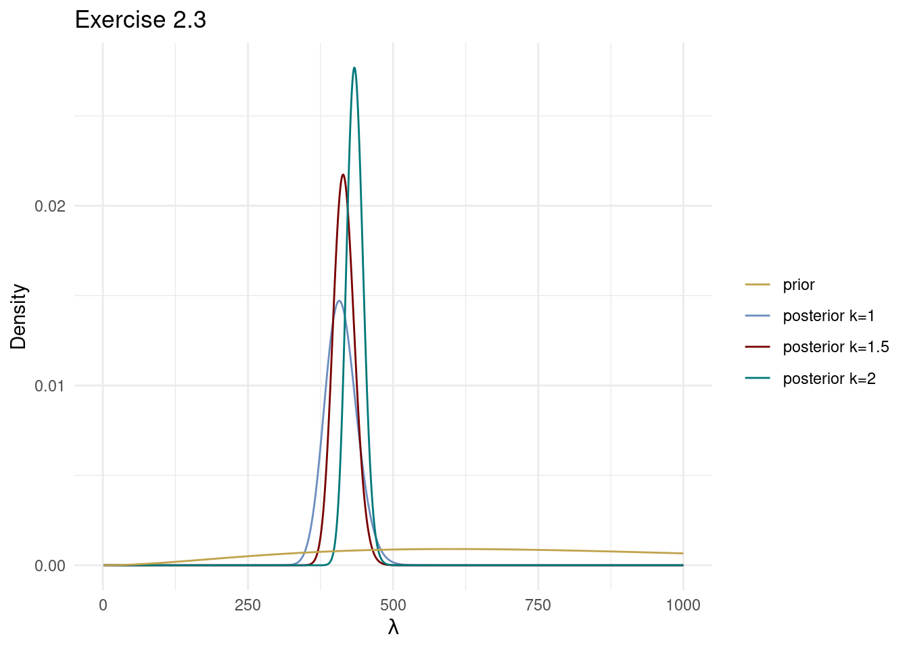

This exercise continues the analysis of the lung cancer data in Exercise 2.2
Assume that the survival time \(X\) of the lung cancer patients in Exercise 2.2 are independent Weibull distributed \[
X_1,\ldots,X_n \vert \lambda, k \overset{\mathrm{iid}}{\sim} \mathrm{Weibull}(\lambda,k).
\] The value of \(k\) determines how the failure rate changes with time:
\(k=1\) gives a failure (death) rate that is constant over time and corresponds to the special case of a exponential distribution \(\mathrm{Expon}(\theta=1/\lambda)\) used in Exercise 2.2. Note that (following Wikipedia) the exponential distribution is parameterized with a rate (inverse scale) parameter \(\theta\), while the Weibull is parameterized with a scale parameter \(\lambda= 1/\theta\) 🤷
\(k<1\) gives a decreasing failure rate over time
\(k>1\) gives an increasing failure rate over time.
Plot the posterior distribution of \(\lambda\) conditional on \(k=1\), \(k=3/2\) and \(k=2\). For all \(k\), use the prior \(\lambda \sim \mathrm{Gamma}(\alpha,\beta)\) with \(\alpha=3\) and \(\beta=1/50\) (which a similar prior for \(\theta=1/\lambda\) as in Exercise 2.2). Hint: the posterior distribution for \(k\neq 1\) is intractable, so use numerical evaluation of the posterior over a grid of \(\lambda\)-values.
Plot the time variable as a histogram and overlay the fitted model for the three different \(k\)-values; use the posterior mode for \(\theta\) in each model when plotting the fitted model density.
Solution Exercise 2.3a
Similar to Exercise 2.2b, the likelihood can be computed with separate treatment of the uncensored and censored observations: \[
\begin{align}
p(x_1,\ldots,x_n \vert \lambda, k) & = \prod_{i=1}^n p(x_i \vert \lambda, k) \\
& = \prod_{u \in \mathcal{U}} p(x_u \vert \lambda, k) \prod_{c \in \mathcal{C}} \Big(1 - F(x_c \vert \lambda, k)\Big)
\end{align}
\] where \(p(x \vert \lambda, k)\) is the pdf of a Weibull variable \[
p(x \vert \lambda, k) = \frac{k}{\lambda}\Big( \frac{x}{\lambda} \Big)^{k-1}e^{-(x/\lambda)^k}\quad\text{ for }x>0
\] which is implemented in R as dweibull. The cdf of the Weibull distribution is of rather simple form \[
F(x \vert \lambda, k) = 1 - e^{-(x/\lambda)^k}
\] and is implemented in R as pweibull.
The code below plots the prior and posterior distribution for \(\lambda\) for the three different \(k\)-values. We could have inserted the mathematical expressions for the pdf and cdf and simplified the final likelihood expression; we will instead use the dweibull and pweibull functions without simplifications since it gives a more general template that can be used for any distribution, not just the Weibull model. For numerical stability we usually compute the posterior distribution on the log scale \[
\log p(\lambda^{(j)} \vert x_1,\ldots,x_n) \propto \log p(x_1,\ldots,x_n \vert \lambda_j) + \log p(\lambda_j)
\] for a grid of equally spaced \(\lambda\)-values: \(\lambda^{(1)}\ldots,\lambda^{(J)}\). The \(\propto\) sign now means that there is a missing additive constant \(\log p(x_1,\ldots,x_n)\) which does not depend on the unknown parameter \(\lambda\). When we have computed \(\log p(\lambda \vert x_1,\ldots,x_n)\) over a grid of \(\lambda\) values we compute the posterior on the original scale by \[
p(\lambda^{(j)} \vert x_1,\ldots,x_n) \propto \exp\Big( \log p(x_1,\ldots,x_n \vert \lambda_j) + \log p(\lambda_j) \Big)
\] and then divide all numbers with the normalizing constant to make sure that the posterior integrates to one. This is done numerically by approximating the integral by a Riemann rectangle sum \[
p(\lambda^{(j)} \vert x_1,\ldots,x_n) =
\frac{\exp\Big( \log p(x_1,\ldots,x_n \vert \lambda^{(j)}) + \log p(\lambda^{(j)}) \Big)}
{\sum_{h=1}^J \exp\Big( \log p(x_1,\ldots,x_n \vert \lambda^{(h)}) + \log p(\lambda^{(h)}) \Big) \Delta}
\] where \(\Delta\) is the spacing between the grid points of \(\lambda\)-values: \(\lambda^{(1)}, \ldots, \lambda^{(J)}\).
library(tidyverse) # loads data manipulation and visualization packageslibrary(survival) # loads the lung cancer data as `lung`colors =c("#6C8EBF", "#c0a34d", "#780000","#007878","#B5C6DF","#EADAAA","#AE6666")
# Plot the prior and posterior densitieslambdaGrid <-seq(1, 1000, length.out =1000)# Compute to get the priorpostRes <-weibull_posterior(lambdaGrid, lung$time, lung$status ==1, k =1, alpha_prior, beta_prior)df <-data.frame(lambdaGrid = lambdaGrid, prior = postRes$prior)# Compute for all selected k valuespostModes =c()for (k inc(1, 3/2, 2)){ postRes <-weibull_posterior(lambdaGrid, lung$time, lung$status ==1, k, alpha_prior, beta_prior) df[str_glue("posterior k={k}")] <- postRes$post postModes =c(postModes, lambdaGrid[which.max(postRes$post)])}df_long <- df %>%pivot_longer(-lambdaGrid, names_to ="density_type", values_to ="density")# Plot using ggplot2ggplot(df_long) +aes(x = lambdaGrid, y = density, color = density_type) +geom_line() +scale_colour_manual(breaks =c("prior", "posterior k=1", "posterior k=1.5", "posterior k=2"), values =c(colors[2], colors[1], colors[3], colors[4])) +labs(title ="Exercise 2.3", x =expression(lambda), y ="Density", color ="") +theme_minimal()

Solution Exercise 2.3b
The fit of the three Weibull models are plotted below. The best fit seems to be for \(k=3/2\), which is still not very good. In a later exercise you will be asked to freely estimate both \(\lambda\) and \(k\).
ggplot(lung, aes(time)) +geom_histogram(aes(y =after_stat(density), fill ="Data"), bins =30) +stat_function(fun = dweibull, args =list(shape =1, scale = postModes[1]), lwd =1, aes(color ="Weibull fit k = 1/2"), ) +stat_function(fun = dweibull, args =list(shape =3/2, scale = postModes[2]), lwd =1, aes(color ="Weibull fit k = 1"), ) +stat_function(fun = dweibull, args =list(shape =2, scale = postModes[3]), lwd =1, aes(color ="Weibull fit k = 2"), ) +labs(title ="Weibull model fits", x ="days", y ="Density") +scale_fill_manual("", values = colors[6]) +scale_color_manual("", values =c(colors[1], colors[3], colors[4])) +theme_minimal()